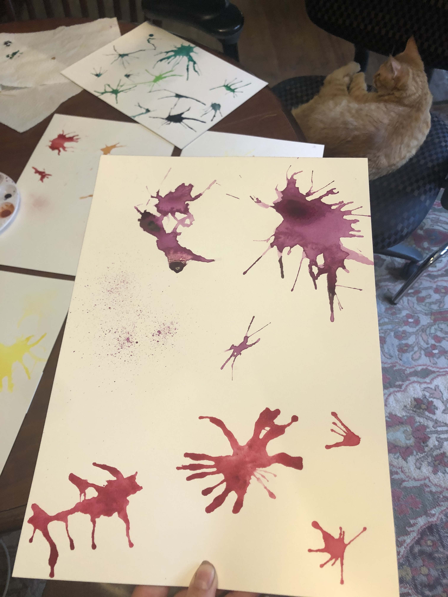
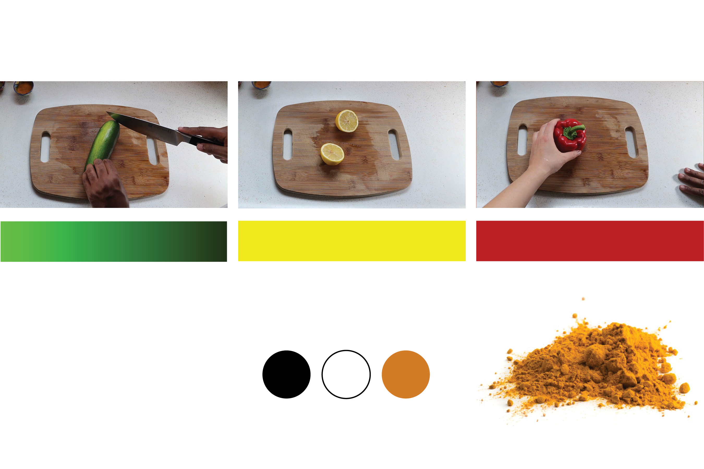

Design Challenge
Many cooking shows only focus on the execution of the dish. They focus on cooking techniques and how to prefect a recipe. The way cooking is portrayed tends to hide the mess, the imperfections and the process around making a meal. This focus on perfectionism can intimidate new cooks and removes the warmth and fun out of cooking. My design challenge was to create cooking material that has depth and shows the mess.
Research
We came up with the Home Spice concept a year ago but it feels even more timely now since Covid has changed people’s routines and habits with food.
A HUNTER special report food news study looked at how Americans’ food habits have changed since COVID. Over half (54%) of consumers are saying they are cooking more now than before COVID-19 started. Of these consumers who are cooking more, 50% claim they are more confident in the kitchen while 26% are learning more and building greater confidence.
More people are cooking and feeling confident in the kitchen but not everyone.
We really want Home Spice to be approachable and enticing for cooks of all abilities. So for my user testing, I interviewed a variety of people interested in cooking ranging in age and comfortability trying a new recipe.
The common takeaway learned from these users is to keep the recipe organized and concise. This is why we decided to make a companion recipe recap video for those viewers just looking for the recipe instruction. Other insights I learned were to keep the ingredients simple or offer easy to find alternatives. Include a variety of recipes on th show and utilize social media for the cooking content.
Process
Warm
Messy
Expressive
Creative
Energetic
I love motion graphics and I wanted the opening animation sequence to set the visual identity for the show. The more I thought about the process of cooking, the more I saw parallels to the process of painting. They are both messy, creative and expressive. This gave me the idea to use paint as a design gesture in the sequence.

When designing the opening animation title sequence, I wanted to highlight the mess and process of cooking. I also wanted to capture the energy and excitement of cooking.


I wanted the food to remain the star so I let the ingredients inspire the palette

The music I chose for the opening sequence was played by my mom. We selected a classical piece that was high energy and exciting.
For the type logo, I wanted the logo to clearly convey cooking. I chose two mix a bold typeface with a casual handwritten feel typeface.
You can view the completed opening animation sequence here
Deliverables
Find full episodes here
Find recipe recap videos here
Find process blog here
Find bibliography here